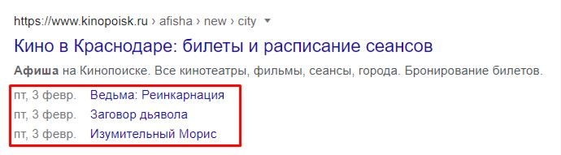

Использование микроразметки
Микроразметка — это специальные теги и атрибуты в веб-верстке, использующиеся для лучшего понимания информации на страницах сайта поисковыми роботами. Ее использование помогает получить качественные переходы на сайт, тем самым увеличив трафик без лишних затрат бюджета.

aboba
Преимущества микроразметки
В первую очередь, микроразметка сайта удобна для пользователя - тем, что кратко передает содержание нужной страницы. Например, если у вас интернет-магазин, пользователь может увидеть цену товара, ключевые характеристики и отзывы покупателей. Если есть точка в офлайне, в микроразметке можно увидеть ее время работы, адрес и контактные данные. Если вы публикуете статьи, то разметка отображает выходные данные и автора каждого материала.
Кроме того, использование микроразметки делает сайт более привлекательным визуально в поисковой выдаче. Красивый сниппет хорош с точки зрения кликабельности, что увеличивает позицию в выдаче (но это происходит не сразу, а в соответствии с реакцией пользователей) и увеличивает посещаемость сайта. Не факт, что это сработает сразу, но если делать эту работу качественно, а параллельно совершенствовать контент, верстку и ассортимент, то можно добиться более чем положительного эффекта, так как это работает и на людей, и на поисковики.
Если вы используете микроразметку, то необходимо делать это со всем контентом сайта. Для интернет-магазина это, в первую очередь, каталог товаров, отдельные позиции и категории, а также статьи на сайте. Любые структурированные данные должны соответствовать контенту конкретной веб-страницы, в код которой они добавлены, и не должны описывать скрытую от посетителей информацию.
Мирокразметка использует набор стандартных классов и атрибутов HTML для пометки различных типов данных, таких как события, контактная информация, организации, рецепты и многое другое. Например, для пометки контактной информации можно использовать классы h-card и атрибуты itemprop для указания имени, адреса, телефона и других данных.
aboba
Примеры использования микроразметки
aboba